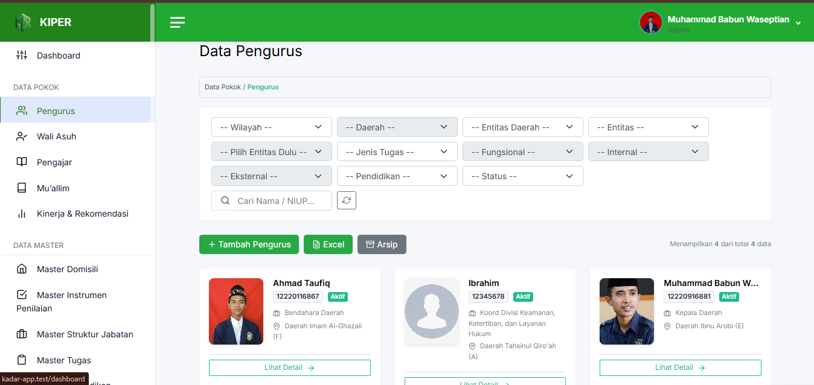
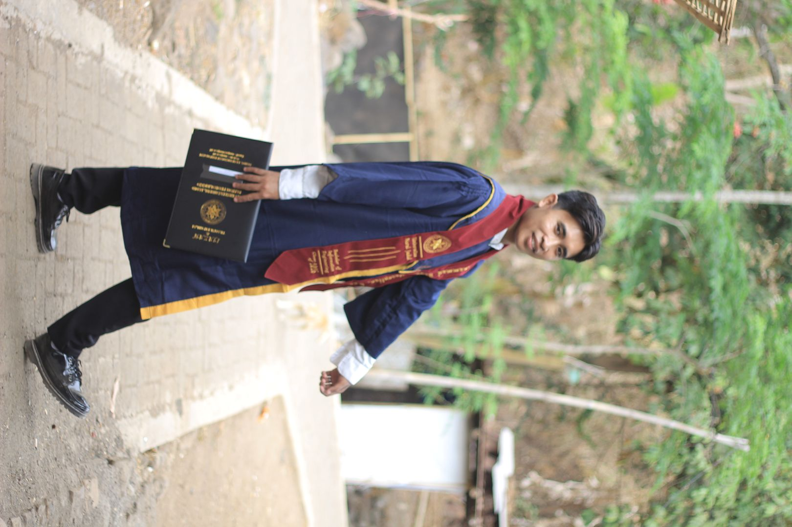
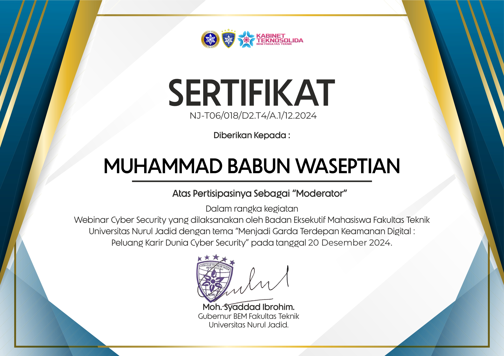
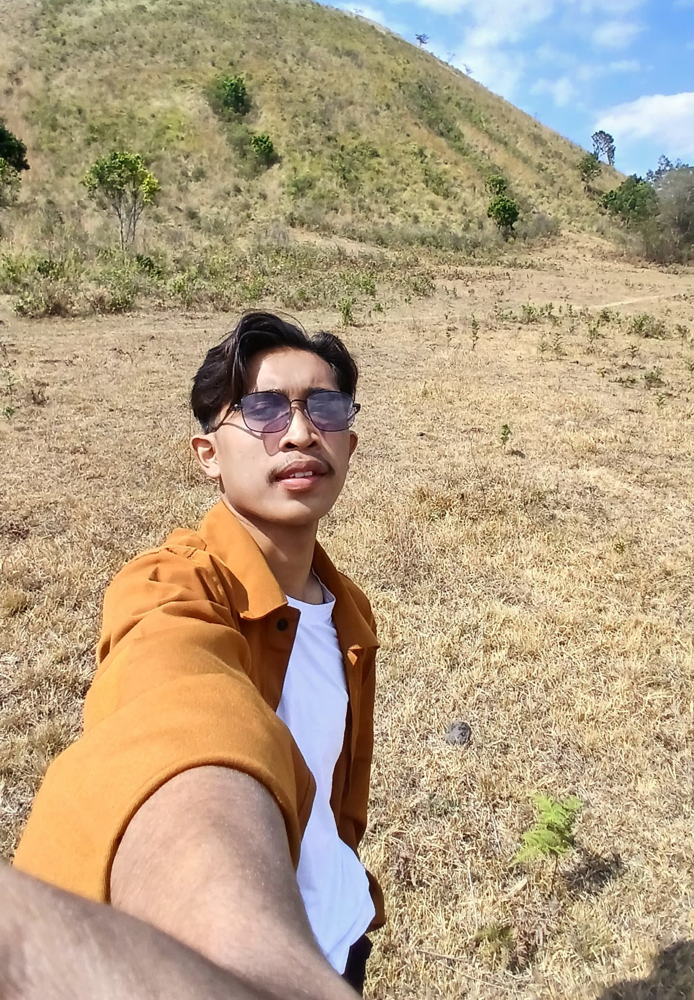

Sistem Penilaian Kinerja Pengurus
Sistem berbasis website untuk mengelola penilaian kinerja dan memberikan rekomendasi tindak lanjut pengurus wilayah.
Laravel
PHP
MySQL
Halo, perkenalkan saya
Lulusan S1 Teknik Informatika dengan IPK 3.90/4.00. Memiliki pengalaman di bidang pelayanan dan administrasi yang membentuk ketelitian data, manajemen waktu, dan komunikasi profesional yang siap berkontribusi di lingkungan kerja yang dinamis.
01 / TENTANG SAYA
Teknologi, ketelitian, dan keinginan untuk terus berkembang.

"Lulusan S1 Teknik Informatika yang berpengalaman di bidang pelayanan pelanggan dan administrasi operasional dengan dedikasi tinggi."
Memiliki pengalaman nyata di bidang pelayanan dan administrasi yang membangun ketelitian dalam pengelolaan data, kemampuan manajemen waktu, serta komunikasi profesional yang baik dengan pelanggan maupun rekan kerja.
Latar belakang pendidikan Teknik Informatika memberikan nilai tambah berupa pemahaman teknologi yang mendukung pekerjaan administratif modern, seperti pengelolaan data digital, laporan, dan sistem informasi berbasis komputer.
02 / PERJALANAN
Riwayat pendidikan dan pengalaman kerja yang membentuk profesionalisme saya.

Menyelesaikan pendidikan sarjana dengan IPK 3.90/4.00. Memperdalam pemrograman, basis data, analisis sistem, dan pengembangan aplikasi.
Bertanggung jawab melayani pelanggan dalam memilih produk fashion sesuai kebutuhan, memberikan informasi mengenai produk, ukuran, model, dan harga, membantu proses penjualan, menata serta merapikan display barang, memastikan ketersediaan produk, dan menjaga kebersihan area toko. Mengutamakan pelayanan yang ramah, komunikatif, teliti, serta berorientasi pada kepuasan pelanggan.
Mendukung kegiatan administrasi dan operasional harian biro secara teliti dan terstruktur menggunakan perangkat lunak produktivitas (Microsoft Office). Berkolaborasi aktif dengan anggota tim lintas divisi untuk memastikan kelancaran program kerja dan seluruh tenggat waktu tugas tercapai. Mengelola arus komunikasi internal guna memfasilitasi kebutuhan administratif yang akurat antar departemen.
03 / KEAHLIAN
Keahlian administrasi dan dukungan teknologi yang saya miliki untuk mendukung operasional kerja.

Pengelolaan Dokumen & Operasional Kantor
Dukungan Teknologi untuk Administrasi
Soft Skills & Kompetensi Kerja
04 / PORTOFOLIO KARYA
Kumpulan proyek pengembangan aplikasi sebagai bentuk penerapan pengetahuan dan kemampuan teknis.

Sistem berbasis website untuk mengelola penilaian kinerja dan memberikan rekomendasi tindak lanjut pengurus wilayah.

Aplikasi pengelolaan data pelayanan, status pengambilan, statistik, dan kehilangan barang di pesantren.

Pengembangan model klasifikasi dan prototipe prediksi menggunakan pendekatan machine learning modern.
05 / SERTIFIKAT
Berbagai kegiatan pelatihan dan pengembangan diri.

Berbagai kegiatan pelatihan dan pengembangan diri menjadi bagian dari upaya meningkatkan kemampuan serta memperluas wawasan profesional.
Pelatihan keamanan siber dan perlindungan data digital
Pengembangan kompetensi kerja dan kesiapan profesional
Berbagai pencapaian relevan yang terus dikembangkan
Lihat seluruh pencapaian dan kompetensi yang telah diraih.
Minta Informasi →06 / HUBUNGI SAYA
Terbuka untuk kesempatan kerja, kolaborasi, maupun diskusi seputar pengembangan teknologi. Saya senang bertemu dengan orang-orang yang memiliki semangat untuk berkembang.
